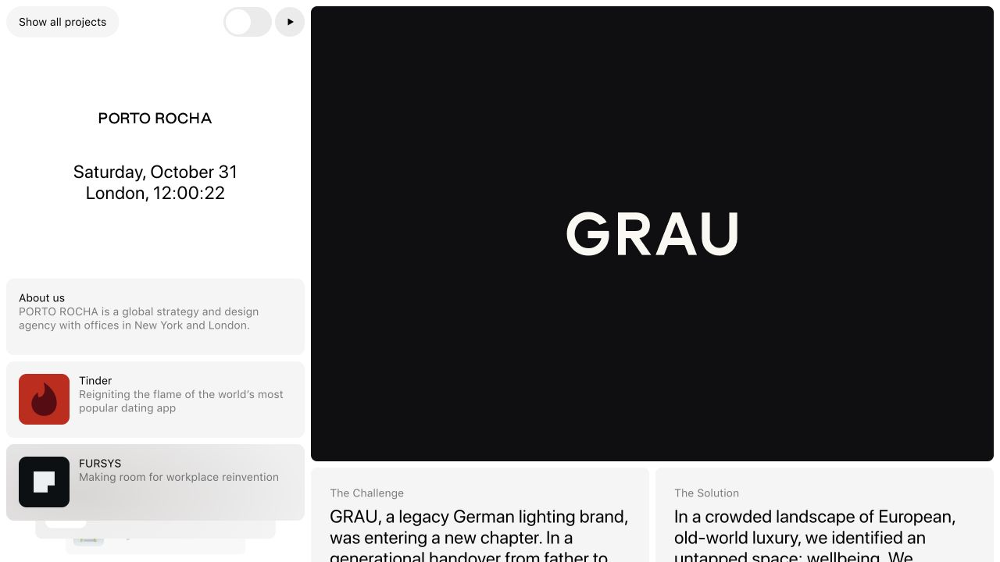
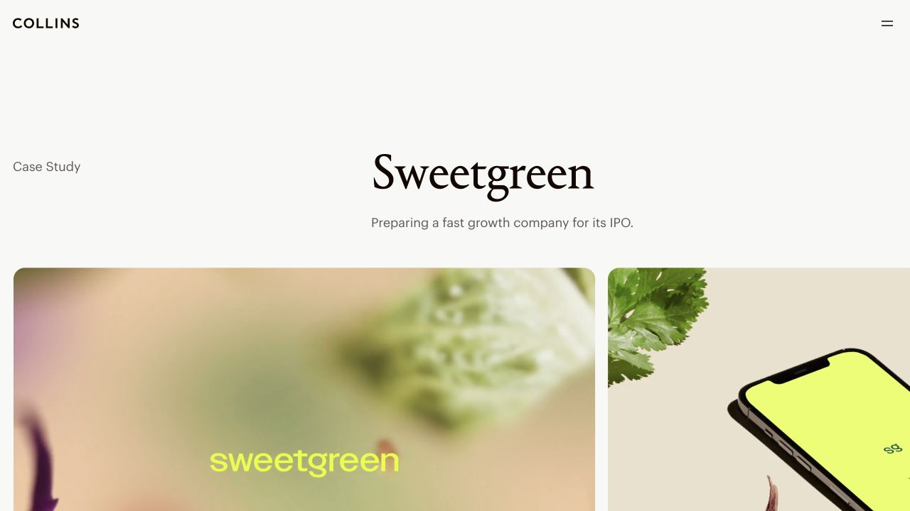
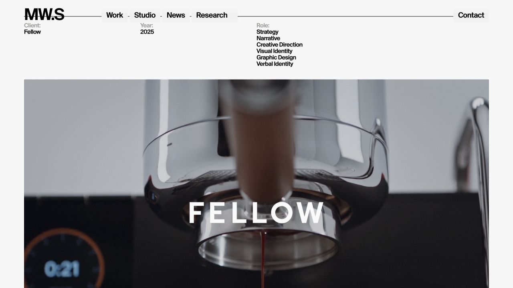
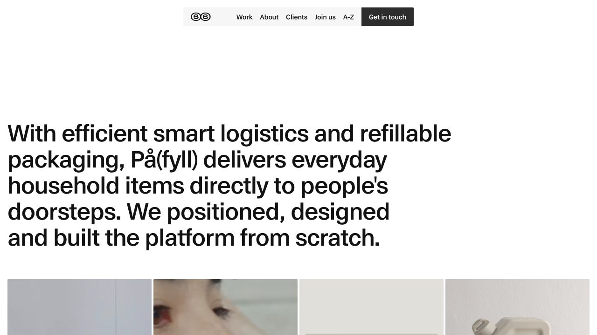
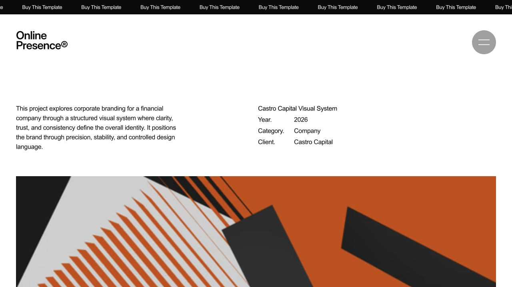
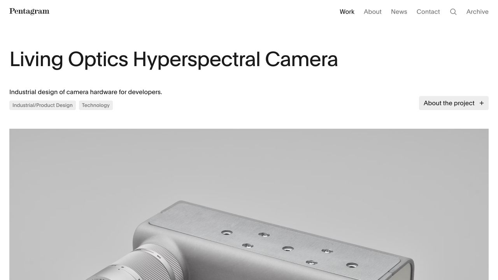
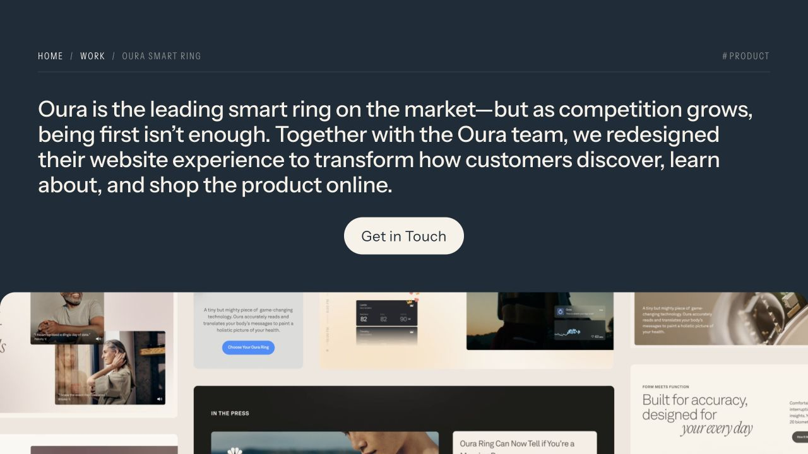
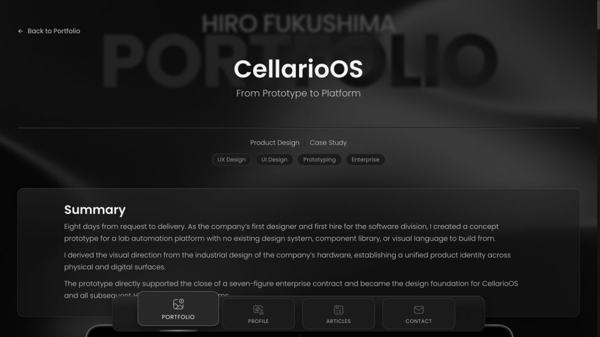

C05 / NEW
艺术指导与模块目录
PORTO ROCHA · GRAU
常驻项目目录与主视觉并列，挑战、方案和项目信息分模块展示，图像序列有清晰的版面秩序。
- 适合
- 适合你希望保留目录、又让图片成为主角的呈现。
- 应用到你的网站
- 目录改为项目的八个章节；主栏使用大图、双栏说明和原始拼图，保留项目配色。
以下是实际网站的案例页截图与原站链接。参考的是图文组织、字体层级与阅读节奏。新增 C05—C08；你可以回复任意编号或组合；选定后再应用到项目内容页。

PORTO ROCHA · GRAU
常驻项目目录与主视觉并列，挑战、方案和项目信息分模块展示，图像序列有清晰的版面秩序。

COLLINS · Sweetgreen
衬线项目标题、横向画廊与独立的完整故事入口，把浏览图片和阅读文字做成不同深度。

MOUTHWASH Studio · Fellow
醒目的无衬线标题、规整的项目信息、整幅图片与轮播模块，详细解释可以按需展开。

Bakken & Bæck · På(fyll)
用一段有力的项目介绍开场，接连续的实体、数字与生活场景视觉，再交代起点和成果。

Minifolio001 · Castro Capital
左右分栏的项目简介与基本信息，下接宽幅图片，文字和视觉保持克制。

Pentagram · Living Optics
清楚的大标题、简洁的项目标签，产品大图与设计解释交替出现。

Instrument · Oura
用章节标题、重点文字和大幅动态内容推进故事，强调挑战、方法与结果。

Hiro Fukushima · CellarioOS
摘要与角色先交代清楚，再通过编号目录进入背景、限制、研究、方案与结果。
新一批推荐 C05 的目录与大图，或 C07 的编辑式产品呈现。每种都会保留你已确认的完整研究过程与原始拼图。
截图来自各站，仅用于本次参考选择。正式网站继续使用你自己的项目、文字、照片和黑色主调。